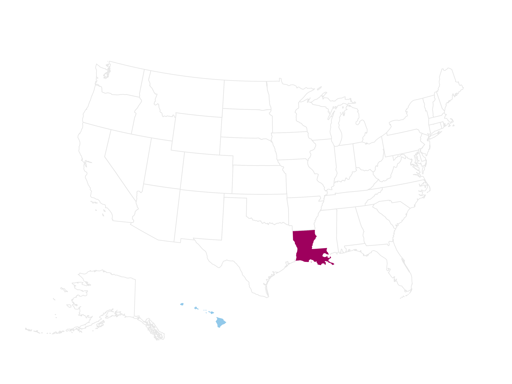
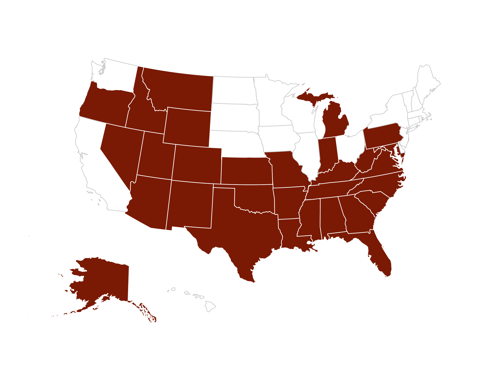
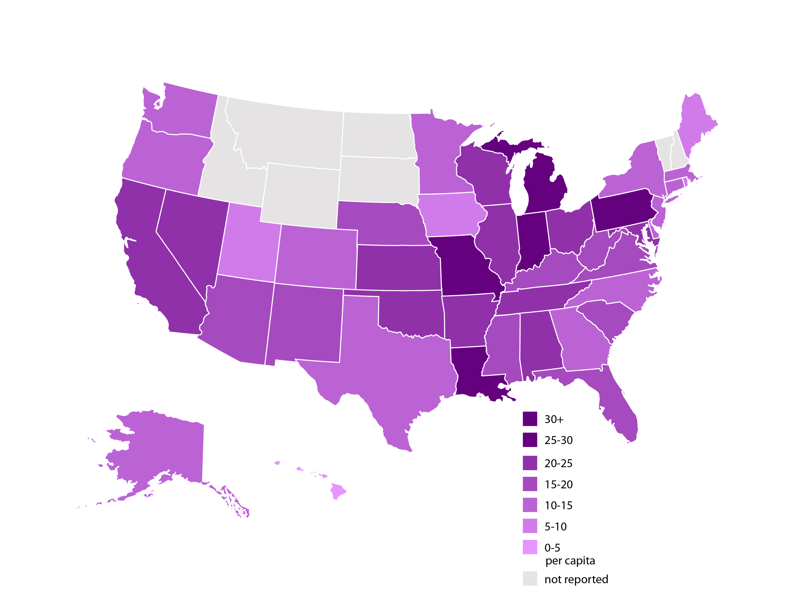
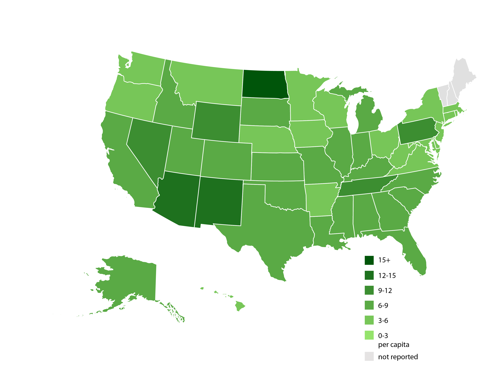
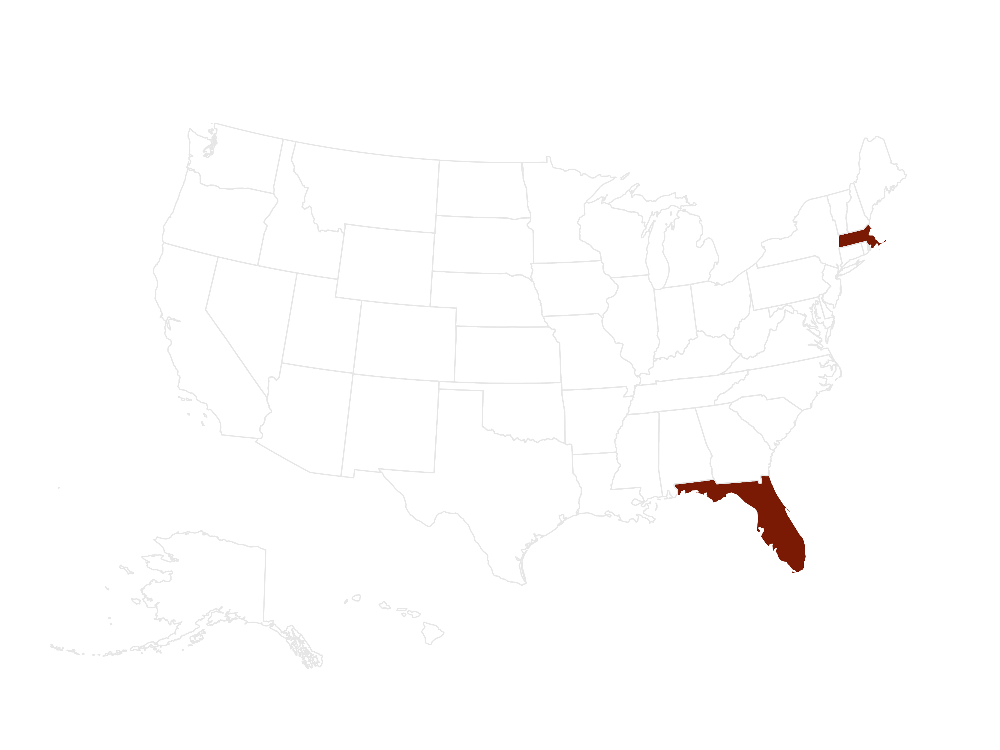
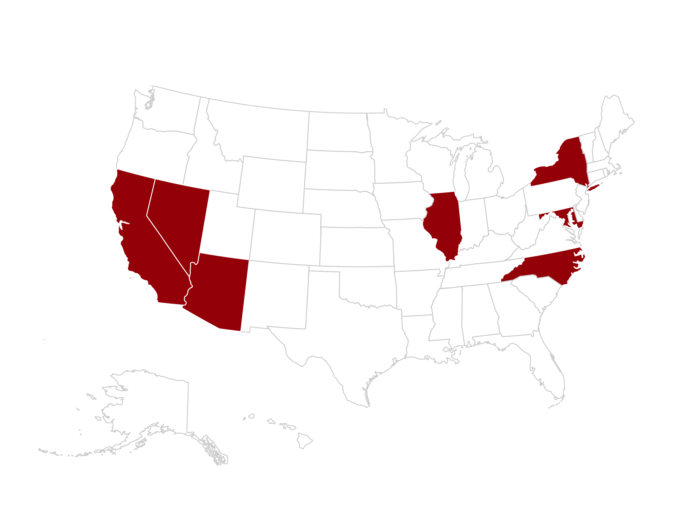
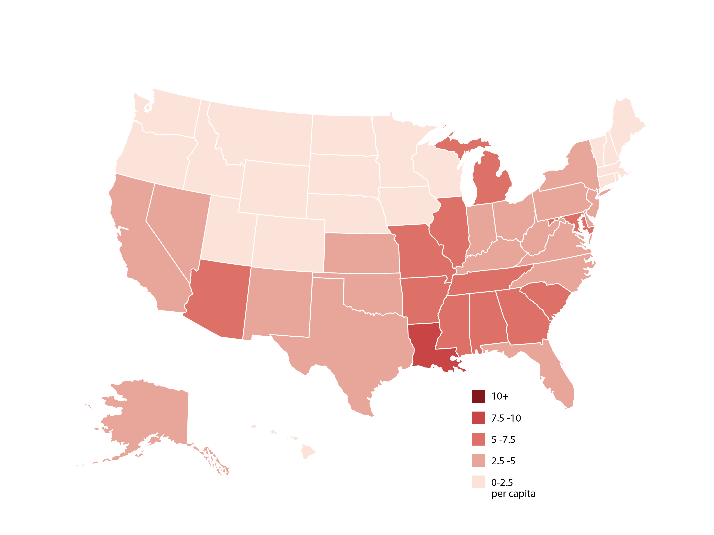
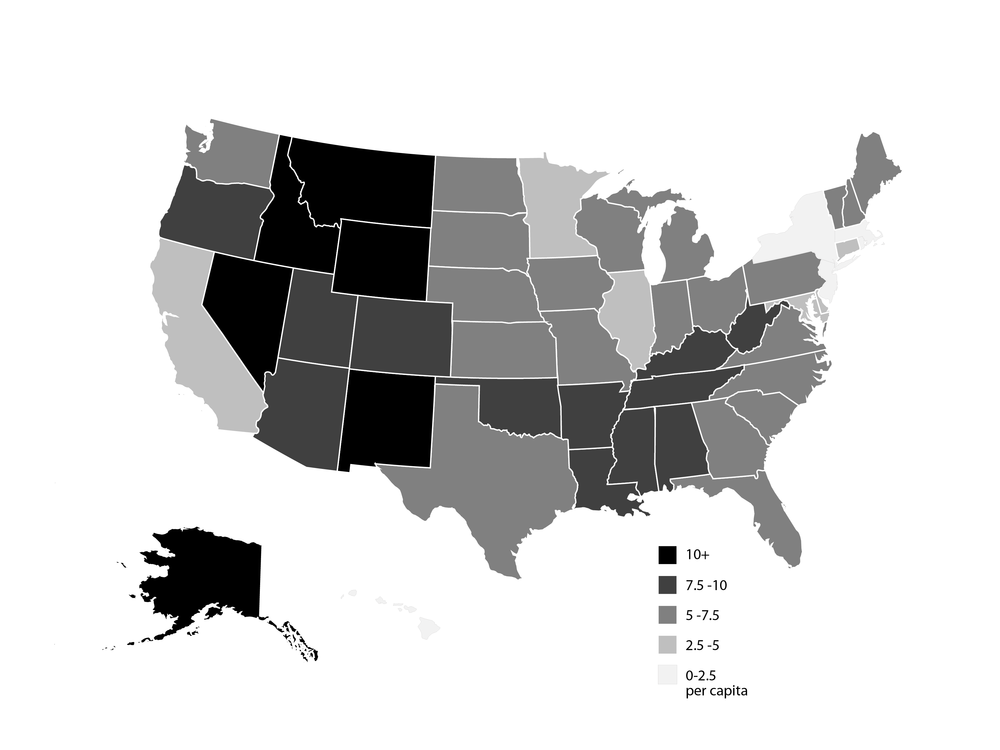

Gun Deaths, by State

10 people out of every 100,000 in the US died by a gun.
Between 2000 and 2010, 335,609 people died from gun related deaths in the United States. Researchers identified trends in race, ethnicity, and intent behind those statistics. Here is what they found.
10 people out of every 100,000 in the US died by a gun.

Hawaii had the lowest number of deaths at 3 per 100,000 . Louisana had the highest number of deaths at 19 per 100,000 .

30 states and Washington DC had higher rates than the national average.

African Americans were almost twice as likely to die by gun than non-Hispanic Whites. 19 vs 9 per 100,000

Hispanics were less likely to die by gun than non-Hispanic Whites

Florida and Massachusetts had increases in gun deaths between 2000-2010

Seven states and Washington DC had decreases in gun deaths between 2000-2010.

The rate of homicide remained steady at 4 per 100,000 over this time period.

The rate of suicides remained steady at 6 per 100,000 over this time period.
While the rate of national firearm deaths remained stable during 2000– 2010, there was significant variation at the state level.
Gun related deaths were twice as high in African Americans than Caucasians but decreased among Hispanics.
Efforts to identify state-specific best practices can contribute to changes in national firearm fatality rates that remain high. This calls for specific studies to identify the drivers of the state-specific trends followed by introducing tailored programmes that target specific racial and ethnic groups in specific states.
[Kalesan B, Vasan S, Mobily ME, et al. State specific, racial and ethnic heterogeneity in trends of firearm-related fatality rates in the USA from 2000 to 2010. BMJ Open 2014;4:e005628. doi:10.1136/bmjopen-2014-005628](http://bmjopen.bmj.com/s_1/4/9/e005628.full)